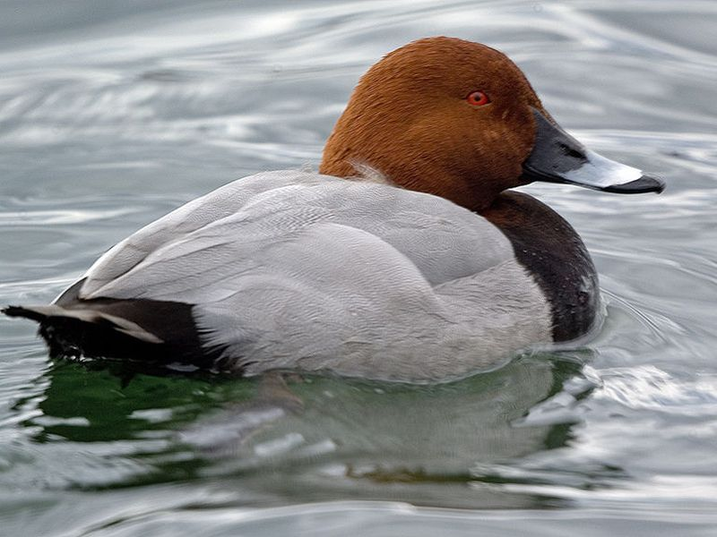

Tafelente
Aythya ferina
Männchen: Einzige Ente in der Region mit kastanienbraunem Kopf und Hals. Weibchen: Grau und braun. Am Lehrpfad selten. Gelegentlicher Brutvogel am Guggenhauser Weiher. Zur Zugzeit häufiger Gast an den großen Stichseen im Ried.